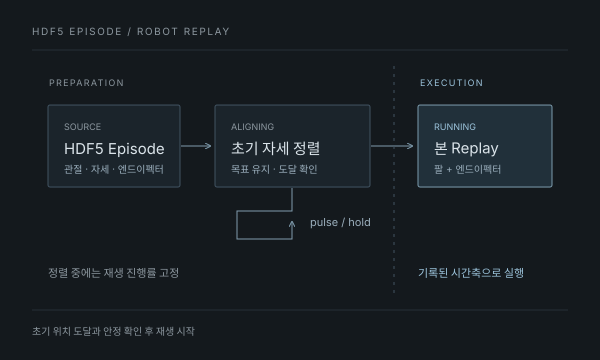

02 / REAL-ROBOT REPLAY
명령은 보냈는데,
왜 목표 전에 멈췄을까?
실행 로직·API·UI를 개발하고, 정상 이동 기능과의 비교로 초기 정렬을 수정해 실로봇에서 확인했습니다.
Neuromeka 인턴 · 2025.12 ~ 2026.06
- 내가 개발
- 실행 로직 · API · UI
- 핵심 수정
- 같은 초기 목표를 도달까지 유지
- 검증 범위
- 한팔·양팔 로봇 · EIR 동작 확인
잠깐 이동 → 목표 이전 정지
초기 정렬 완료 → 본 Replay
명령 유지 방식의 개념 비교 · 실측 타이밍 그래프 아님
01 / Overview
데이터를 보는 것에서
로봇을 움직이는 기능으로
수집한 조작 데이터를 그래프나 영상으로 확인하는 것에 더해, 기록된 동작을 실제 로봇에서 다시 실행할 수 있는 기능이 필요했습니다.
저는 기존 Replay 참고 로직을 플랫폼의 실행 구조에 연결하고 데이터 해석, 초기 정렬, 장치 명령과 실행 상태를 다루는 기능을 개발했습니다. 브라우저의 데이터 재생 기능은 활용하되, 실제 로봇의 실행과 상태 관리는 backend가 담당하도록 구성했습니다.
Replay 참고 로직과 기존 그래프·영상 playback을 활용하고, 플랫폼의 실로봇 실행 경로로 통합·확장했습니다.

02 / System Flow
정렬이 끝난 뒤에만
재생 시간을 시작
Replay는 텔레오퍼레이션으로 기록한 동작을 실제 로봇에서 다시 확인하는 기능입니다. 재생 시점의 로봇 자세가 기록의 시작 자세와 다를 수 있어, 기록된 시작 자세로 먼저 정렬해야 합니다.
선택한 HDF5 episode에서 관절·자세와 엔드이펙터 데이터를 읽고, 현재 장치에서 실행할 수 있는지 확인합니다. 초기 정렬 Safe Logic이 시작 자세로 이동하는 목표 명령을 유지하고, 도달·안정을 확인한 뒤 본 Replay를 시작합니다.
본 재생에서는 기록된 시간축에 맞춰 팔과 그리퍼·로봇 핸드 명령을 전달합니다. 웹UI 화면의 커서와 진행률은 backend가 보고한 실행 상태를 따라가며 초기 정렬 중에는 전진하지 않습니다.
브라우저의 재생 커서가 로봇 명령을 만드는 구조가 아닙니다. 실제 실행은 backend가 맡고 화면은 그 진행 상태를 표시합니다.
- STARTING
데이터·실행 조건 확인
episode와 대상 장치를 확인하고 실행 준비
- ALIGNING
초기 정렬 Safe Logic
목표 유지 → 도달·안정 확인
재생 커서 고정 - RUNNING
본 Replay 실행
기록된 시간축으로 장치 명령 전달
실행 상태에 맞춰 커서 진행
03 / Case A · Alignment
Case A · 초기 정렬 중 정지
명령은 전달됐는데,
목표 전에 멈췄습니다.
초기 위치 이동 명령은 전달됐지만 로봇이 잠깐 움직인 뒤 목표에 도달하기 전에 멈췄습니다. 상태 판정과 재시도를 보강해도 실제 장비에서는 같은 현상이 반복됐습니다.
- 실행 단계 분리
초기 정렬과 본 Replay를 분리하고 정렬 중에는 커서가 진행하지 않도록 했습니다. 초기 이동 자체의 중단 현상은 남았습니다.
- 완료 판정·재시도 보강
현재 로봇과 기록 데이터의 공통 팔 축을 비교하고 대기·재시도를 수정했지만, 실제 목표까지 계속 움직이지 못했습니다.
- 정상 기능과 비교
정상 동작하던 Saved Position의 Joint Move를 비교했습니다. 같은 관절 목표를 보내더라도 목표를 유지하는 방식이 달랐습니다.
목표를 유지하는 이동
버튼을 누르는 동안 같은 목표를
짧은 간격으로 반복 전송
단발 이동 + 도착 관찰
목표를 한 번 전송한 뒤
telemetry로 도달 여부만 확인
판정 이후의 재시도뿐 아니라,
목표를 유지하는 실행 방식을 맞춰야 했습니다.
04 / Implementation
초기 목표를 유지하고,
도달한 뒤 Replay 시작
backend의 초기 정렬 Safe Logic에 정상 Joint Move와 같은 pulse/hold 방식을 적용해, 목표 도달 전까지 같은 초기 목표를 반복 전송하도록 바꿨습니다. 관절 오차와 모션 상태를 보고, 이용 가능한 속도 정보도 확인해 안정 상태가 유지된 뒤 본 Replay를 시작하도록 했습니다.
초기 목표 한 번 전송
잠깐 이동한 뒤 정지
목표에 도달하지 못한 채 이동 중단
대기·재시도 변경 후에도 반복
같은 초기 목표 반복 전송
초기 위치 도달·안정 확인
초기 정렬이 끝난 뒤 running으로 전환
기록된 시간축으로 Replay 시작
pulse/hold는 이 사례의 장비와 제어 경로에서 확인한 방식입니다. 모든 로봇의 관절 이동에 반복 전송이 필요하다는 뜻은 아닙니다.
05 / Case B · Right Arm
Case B · Replay 중 오른팔 동작 누락
| 단계 | 기록으로 확인한 내용 |
|---|---|
| 현상 | 재생 중 오른팔 동작이 누락되는 구간 관찰 |
| 조사 | 동일 구간에서 저장 목표값은 갱신되지 않지만 측정 자세는 변함을 비교 |
| 수정 | 해당 데이터 경로를 측정 자세 우선 재생으로 바꾸고 전송 로직 수정 |
| 검증 | 수정 후 실제 로봇 동작 확인. 모든 목표값을 측정값으로 바꾸는 일반 규칙으로 적용하지 않음 |
오른팔 정지 구간: 목표값과 측정 자세의 차이
저장 목표값이 갱신되지 않는 구간에서도 측정 자세는 변하고 있었습니다. 해당 경로를 측정 자세 우선 재생으로 바꾸고 전송 로직을 수정한 뒤 실제 로봇 동작을 확인했습니다. 모든 데이터의 목표값을 측정값으로 바꾸는 일반 규칙으로 적용한 것은 아닙니다.
- 수정 전: 갱신되지 않는 저장 목표값 → 오른팔 동작 누락
- 비교: 동일 구간의 측정 자세 변화 확인
- 수정 후: 해당 경로에서 측정 자세 우선 → 전송 로직 수정 → 실로봇 확인
재생·일시정지·재개·중지와 팔·그리퍼 매핑을 구현하고 한팔·양팔 로봇, EIR에서 동작을 검증했습니다. 정렬은 시작 자세로 도달하는 과정이고, 본 재생은 기록된 시간축의 실행입니다.
06 / Validation
코드의 통과에서
실제 동작 확인까지
수정 후 실제 로봇에서 초기 위치로 이동하다 멈추던 문제의 해결을 확인했습니다. 이후 정렬 완료 뒤 본 재생이 이어지는 흐름과 재생·일시정지·재개·정지, 팔과 엔드이펙터의 동작을 확인했습니다.
화면의 커서와 진행률은 backend의 실행 상태와 연결했습니다. 화면 표시의 연결과 물리적인 동작 확인은 나눠 판단했습니다.
직접 사용한 로봇·엔드이펙터와 각 텔레오퍼레이션 장치로 수집한 데이터에서 Replay 정상 동작을 확인했으며, 다중 로봇 구성에서도 검증했습니다.
- 초기 정렬 Safe Logic목표 이전 정지 문제 해결
- pulse/hold 수정 뒤 목표 위치로 이동하는 동작을 실제 로봇에서 확인했습니다.
- 실행 단계정렬 완료 뒤 본 재생
- 정렬과 본 Replay를 분리하고 도달·안정 뒤 실행하는 경로를 확인했습니다.
- 실행 제어재생 · 일시정지 · 재개 · 정지
- 실제 장비에서 재생 제어와 종료 처리를 확인했습니다.
- 장치 동작사용 장비 전체 Replay 확인
- 직접 사용한 로봇·엔드이펙터와 각 텔레오퍼레이션 장치로 수집한 데이터의 Replay 정상 동작을 확인했습니다.
- 다중 로봇다중 로봇 구성에서 재생
- 다중 로봇 구성에서도 기록된 동작을 재생하고 정상 동작을 확인했습니다.
- 화면 연결실행 상태에 따른 커서 표시
- 초기 정렬 중 커서를 고정하고 본 재생의 진행 상태를 표시하도록 연결했습니다.
07 / Takeaway